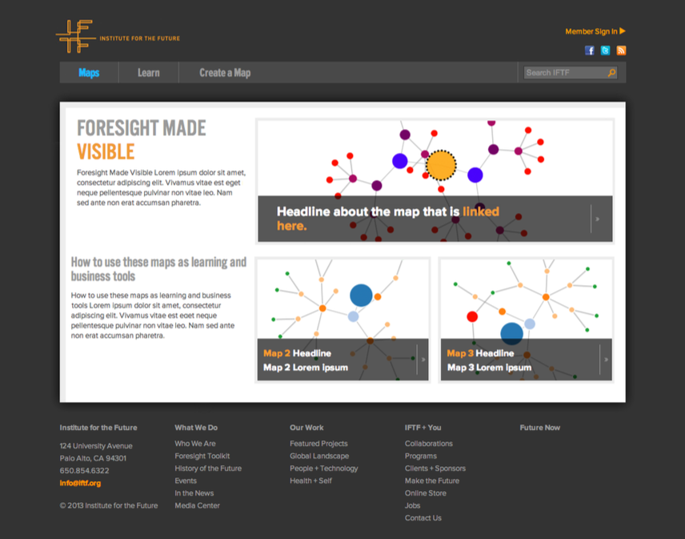
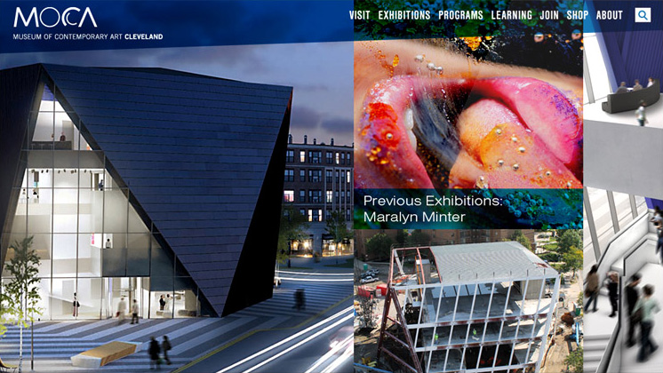

Amplify chatbot
One of Reveal's goals was to convert their audience of podcast listeners into readers of their longform journalism. As people listen to the show, they can text the chatbot at key moments to dig deeper in the story, and receive additional content, such as a photograph, key documents, or other interactive content providing more context to the story. This project grew out of Reveal's collaboration with the d.school at Stanford University. Amplify received an Edgar R. Murrow award for Excellence in Innovation.Reveal website
Reveal is the online home of The Center for Investigative Reporting’s award-winning journalism. The design provides a clean, minimal layout optimized for readability across all platforms, and is perfectly suited for Reveal’s long-form work. A persistent audio player facilitates extended listening by not reloading between pages. The Reveal website won the 2016 Edgar R. Murrow award for general excellence.Struktur Event
Struktur Event is the first creative conference and podcast for the outdoor design industry. Now in its fifth year, Struktur brings together designers from the top apparel and equipment brands to grow design leadership capacity, and build professionalism within the industry. Working at the intersection of creativity, business and entrepreneurship, it’s a new space for designers to build valuable skills, get exposed to new ideas, and forge stronger relationships with their peers.Impact Tracker
Media organizations are always looking to measure and analyze the impact of their work. I collaborated with our Director of Strategic Research to develop the Impact Tracker. This online database allows for consistent recording and analysis of media impact at the structural, societal, and individual level. A histogram timeline lets organizations visualize their impact over time.
IFTF Foresight Maps
The Institute for the Future produces “foresight maps” based on their research. This tool translates IFTF's print maps into an interactive experience. Users can explore, filter, and add to the data to better understand our complex futures. Using D3.js to power the visualizations allows authors to quickly experiment with a variety of visualization models for each project.Exploratorium Plankton kiosk
The Plankton Book kiosk introduces Exploratorium visitors to the plankton species living right outside the museum’s door, in the San Francisco Bay. The kiosk provides a taxonomy of all species, and shows their fluctuations over the course of the year.
MOCA website
The MOCA website is a vibrant tribute to Cleveland’s newest contemporary art museum. The layered, saturated design effortlessly complements the museum’s contemporary vibe.